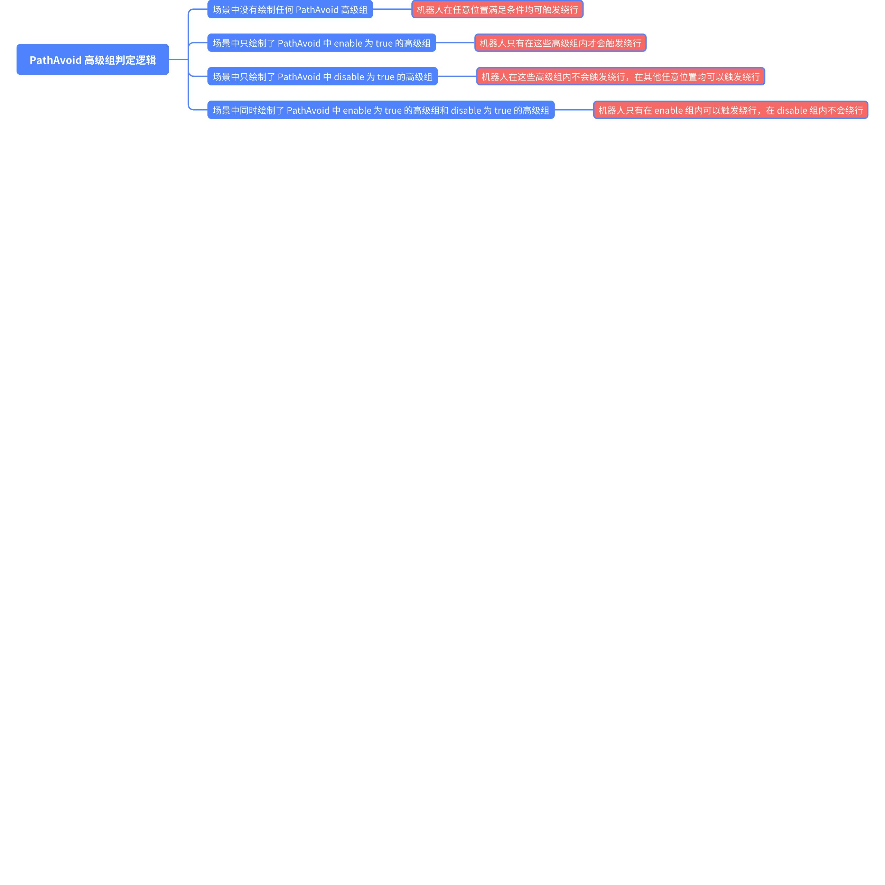

Core 功能文档
Wiki table of contents
- Wiki table of contents
header-v2
SEER Robotics
PathAvoid
Last updated: Jul 25
PathAvoid
PathAvoid
Modified July 25, 2024

0.1.9.240701
用于配置沿线路绕行（重规划）生效范围的高级组
参数名称 | 参数位置 | 单位 | 默认值 | 支持版本 | ||||
enable | PathAvoid | boolean | false | 0.1.9.240701 | ||||
允许绕行区域 | | | | | ||||
disable | PathAvoid | boolean | false | 0.1.9.240701 | ||||
禁止绕行区域 | | | | | ||||
判定逻辑
0 results
Board

Comments (0)
Go to the first comment
0 words
- Help Center
- Keyboard Shortcuts